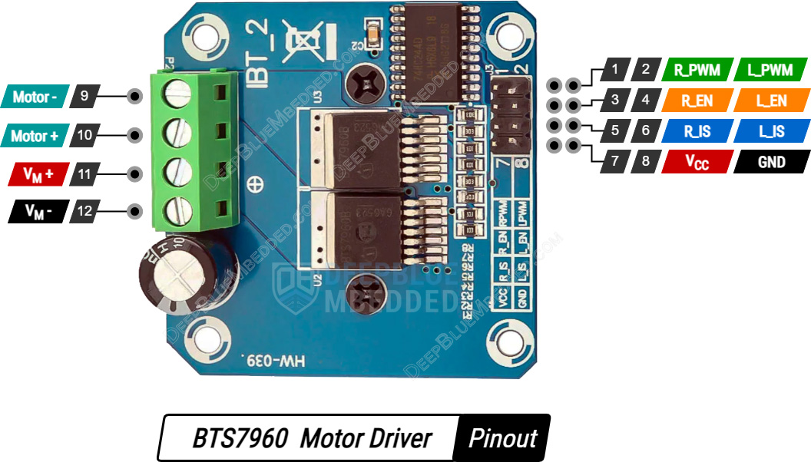
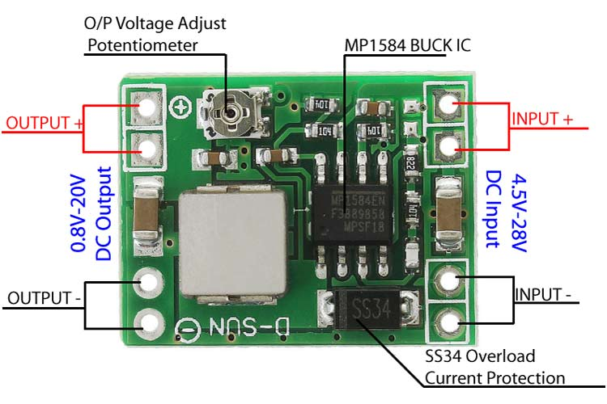

NodeMCU ESP-32S v1.1 · BTS7960 IBT-2 · MP1584 Buck 24V→5V · Bateria 24V
Cores dos fios: Vermelho=24V · Preto=GND · Laranja=5V · Amarelo=3.3V · Azul=GPIO4 · Verde=GPIO5 · Roxo=GPIO16 · Ciano=GPIO17

🔍 clique para ampliar| Pino | Conectar em | Função |
|---|---|---|
| R_PWM (1) | GPIO 4 | PWM avança |
| L_PWM (2) | GPIO 5 | PWM recua |
| R_EN (3) | 3.3V | Enable ON |
| L_EN (4) | 3.3V | Enable ON |
| R_IS (5) | — não usar | Sense |
| L_IS (6) | — não usar | Sense |
| VCC (7) | 5V ESP32 | Lógica |
| GND (8) | GND | Terra |
| VM+ (11) | Bat+ 24V | Potência |
| VM− (12) | Bat− GND | Potência |
| Motor+ (10) | Motor Esq. A | Saída |
| Motor− (9) | Motor Esq. B | Saída |
 🔍 clique para ampliar
🔍 clique para ampliar
| Pino ESP32 | Destino |
|---|---|
| 5V0 | Buck OUT+ / VCC ambos drivers |
| GND | GND unificado / GND ambos drivers |
| 3V3 | R_EN + L_EN (Driver 1 e Driver 2) |
| GPIO 4 | Driver 1 R_PWM (pino 1) |
| GPIO 5 | Driver 1 L_PWM (pino 2) |
| GPIO 16 | Driver 2 R_PWM (pino 1) |
| GPIO 17 | Driver 2 L_PWM (pino 2) |
| Pino | Conectar em | Função |
|---|---|---|
| R_PWM (1) | GPIO 16 | PWM avança |
| L_PWM (2) | GPIO 17 | PWM recua |
| R_EN (3) | 3.3V | Enable ON |
| L_EN (4) | 3.3V | Enable ON |
| R_IS (5) | — não usar | Sense |
| L_IS (6) | — não usar | Sense |
| VCC (7) | 5V ESP32 | Lógica |
| GND (8) | GND | Terra |
| VM+ (11) | Bat+ 24V | Potência |
| VM− (12) | Bat− GND | Potência |
| Motor+ (10) | Motor Dir. A | Saída |
| Motor− (9) | Motor Dir. B | Saída |

🔍 clique para ampliar| Pino MP1584 | Conectar em |
|---|---|
| INPUT+ | Bat+ → Diodo N04 (catodo/faixa) |
| INPUT− | GND Unificado (Bat−) |
| OUTPUT+ | Cap 1000µF (+) → ESP32 5V0 |
| OUTPUT− | GND Unificado |
Monte a fonte 5V antes de conectar qualquer driver ou motor. Valide antes de continuar.
🔍 clique para ampliar
Com o ESP32 funcionando, adicione o primeiro driver BTS7960 e teste o controle.
// Teste Motor Esquerdo — Driver 1 #define RPWM_1 4 #define LPWM_1 5 void setup() { pinMode(RPWM_1, OUTPUT); pinMode(LPWM_1, OUTPUT); Serial.begin(115200); } void loop() { analogWrite(RPWM_1, 150); analogWrite(LPWM_1, 0); delay(2000); // avança analogWrite(RPWM_1, 0); analogWrite(LPWM_1, 0); delay(1000); // para analogWrite(RPWM_1, 0); analogWrite(LPWM_1, 150); delay(2000); // recua analogWrite(RPWM_1, 0); analogWrite(LPWM_1, 0); delay(1000); }
🔍 clique para ampliar
Mesma lógica do Driver 1 — use GPIO 16 e 17 (não 6 e 7).
#define RPWM_1 4 #define LPWM_1 5 #define RPWM_2 16 #define LPWM_2 17 void mover(int e, int d) { analogWrite(RPWM_1, e>0?e:0); analogWrite(LPWM_1, e<0?-e:0); analogWrite(RPWM_2, d>0?d:0); analogWrite(LPWM_2, d<0?-d:0); } void setup() { pinMode(RPWM_1,OUTPUT); pinMode(LPWM_1,OUTPUT); pinMode(RPWM_2,OUTPUT); pinMode(LPWM_2,OUTPUT); Serial.begin(115200); } void loop() { mover(150,150); delay(2000); mover(0,0); delay(500); mover(-150,-150); delay(2000); mover(0,0); delay(500); }
🔍 clique para ampliar
Revise tudo antes de energizar o sistema completo pela primeira vez.
// Sistema completo — 2 Motores Dewert 24V #define RPWM_ESQ 4 #define LPWM_ESQ 5 #define RPWM_DIR 16 #define LPWM_DIR 17 void motorEsq(int vel) { analogWrite(RPWM_ESQ, vel>0?vel:0); analogWrite(LPWM_ESQ, vel<0?-vel:0); } void motorDir(int vel) { analogWrite(RPWM_DIR, vel>0?vel:0); analogWrite(LPWM_DIR, vel<0?-vel:0); } void setup() { pinMode(RPWM_ESQ,OUTPUT); pinMode(LPWM_ESQ,OUTPUT); pinMode(RPWM_DIR,OUTPUT); pinMode(LPWM_DIR,OUTPUT); Serial.begin(115200); Serial.println("Sistema pronto!"); } void loop() { motorEsq(200); motorDir(200); delay(3000); motorEsq(0); motorDir(0); delay(1000); motorEsq(-200);motorDir(-200); delay(3000); motorEsq(0); motorDir(0); delay(1000); }